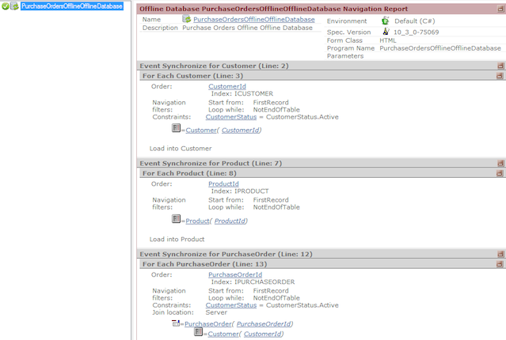
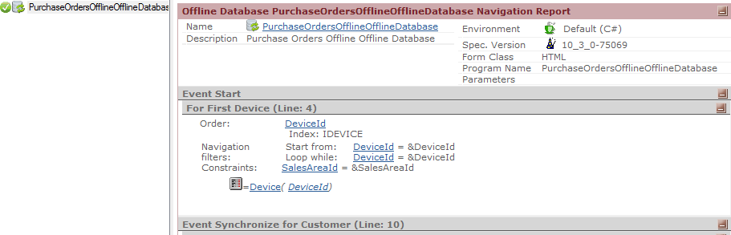

As any other GeneXus object, the Offline Database object specifies a Navigation Report about all the Tables, Conditions, Events, etc. that it will access. This navigation report shows the Start Event navigation (See Offline Database Object events), and one Synchronize Event navigation for each table synchronized by the Offline Database object. For each Synchronize Event, it shows the conditions that apply to that table, from the conditions specified in the Conditions tab. ExampleFor instance, in the Simple Offline Application sample the condition CustomerStatus = CustomerStatus.Active; will generate the following Synchronize Event events in the navigation report:  Also, if there is a Start Event in the Events section like this:
Event Start
&ClientId = ClientInformation.Id
For Each
where DeviceId = &DeviceId
&SalesAreaId = SalesAreaId
EndFor
Endevent
The corresponding navigation of that event will be shown in the Offline Database object navigation:  NoteSince GeneXus 16 Upgrade 11 the navigation report of an Offline Database object shows for each table one object name that references it (although it is possible that other objects also reference the table). Message style:
This makes it easier to understand how the structure of the Offline Database is created, and it is useful in tracking and fixing any related issue or error. See also
|
| Backlinks | ||
| My first Offline Native Mobile application | Category:Offline Database object | |
| Offline Database Object conditions | Offline Database reorganization | Toc:Offline Native Mobile Applications |